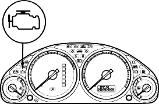
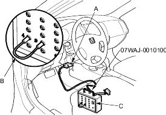

Intermittent Failures
The term ''intermittent failure'' means a system may have had a failure, but it checks OK now. If the Malfunction Indicator Lamp (MIL) on the dash does not come on, check for poor connections or loose wires at all connectors related to the circuit that you are troubleshooting.
Opens and Shorts
''Open'' and ''Short'' are common electrical terms. An open is a break in a wire or at a connection. A short is an accidental connection of a wire to ground or to another wire. In simple electronics, this usually means something will not work at all. In complex electronics (like ECM's/PCM's) this can sometimes mean something works, but not the way it is supposed to.
How to Troubleshoot
Special Tool Required
DLC terminal box 07WAJ-0010100
If the MIL (Malfunction Indicator Lamp) has come on
- Start the engine and check the MIL.

- If the MIL stays on, jump the SCS line
- Connect the DLC terminal box to the 16P Data Link Connector (DLC) (A) located under the driver's side of the dashboard.
- Connect the DLC terminal box terminals No. 4 and No. 9 with a jumper wire (B), then push the switch (C).

*: The illustration shows LHD model.
- Check the Diagnostic Trouble Code (DTC) and note it. Refer to the DTC Troubleshooting Index and begin the appropriate troubleshooting procedure.
If the MIL did not come on
If the MIL did not come on but there is a driveability problem, refer to the Symptom Troubleshooting Index in this section.
If you cannot duplicate the DTC
Some of the troubleshooting in this section requires you to reset the Engine Control Module (ECM)/Powertrain Control Module (PCM) and try to duplicate the DTC. If the problem is intermittent and you cannot duplicate the code, do not continue through the procedure. To do so will only result in confusion and, possibly, a needlessly replaced ECM/PCM.